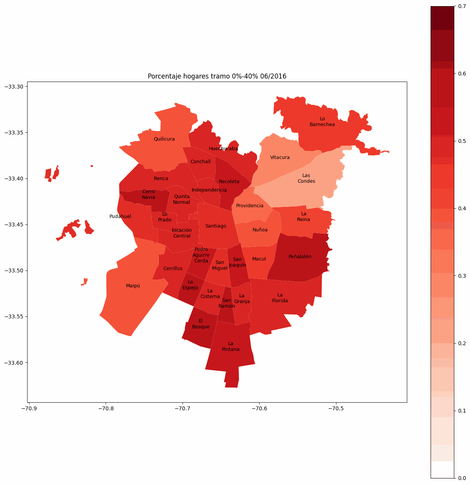
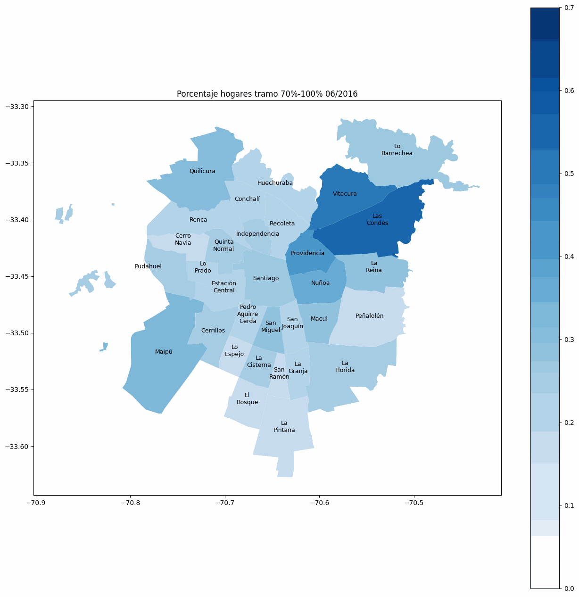
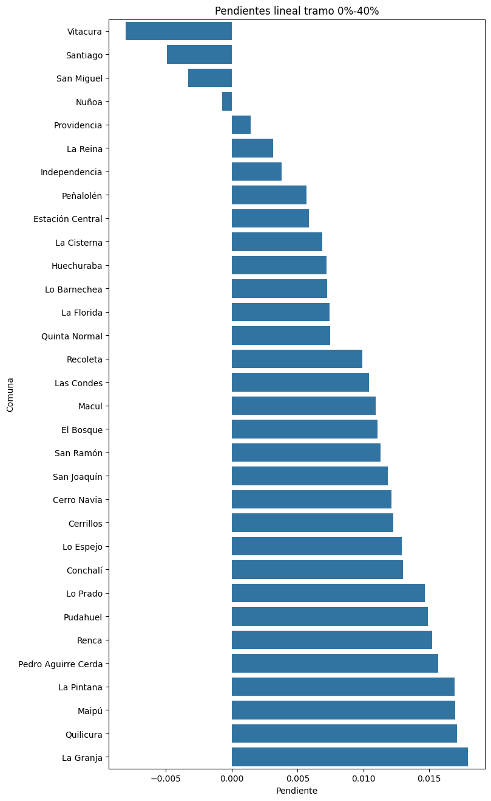
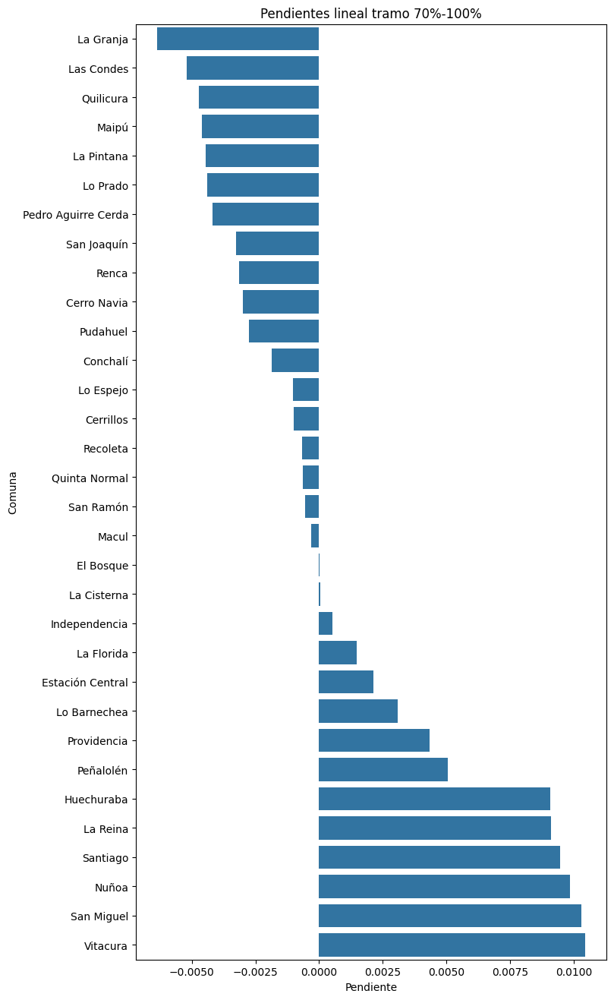
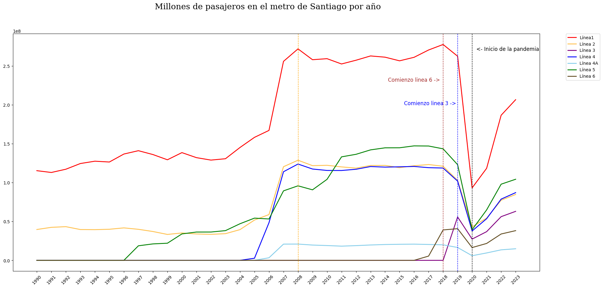

proyecto grupal IMT2200-2 / 2024
Análisis transporte Región Metropolitana
Fig. 0 - Mapa mostrando el índice IC, de cada comuna.
IC: Índice de cobertura de transporte público
Considerando la información obtenida desde el DTP y la api overpass-turbo , a través de la cual se pudo construir el mapa. Tenemos que el IC se calcula a través de dos índices:
- Indice por habitante:
Cantidad de paradas de autobuses por cada habitante de la comuna.
Se calcula como : N° Paradas / Población - Indice por área:
Se mide la cantidad de paradas por kilómetro cuadrado de área urbanizada en la comuna.
Se calcula como: N° Paradas / Área urbanizada
Luego, el IC se calcula como el promedio de la suma de la normalizacion de estos índices, así :
IC = (norm(Indice por habitante) + norm(Indice por área)) / 2
Cambio de porcentaje de hogares en el tramo 0-40%
Cambio de porcentaje de hogares en tramo 70% - 100%
Otro análisis, en esta ocasión con los datos del BIDAT (Banco Integrado de Datos), muestra como se han movilizado los distintos tramos CSE (Clasificación Socioeconómica) en Santiago a través de los últimos años. El tramo CSE es una herramienta clasificatoria del RSH (Registro Social de Hogares) que agrupa los hogares de Chile según sus ingresos totales, los integrantes de la familia, las características de la vivienda y la educación de los miembros. Un tramo CSE bajo se traduce en menores ingresos y mayor vulnerabilidad, mientras que un tramo CSE alto en mayores ingresos y menor vulnerabilidad.
Dada una regresión lineal en los datos asociados a cada comuna, en cada año. Enteniendo que la pendiente representa la tendencia que han tenido estos valores a lo largo del tiempo (disminuido, mantenido o aumentado). Basta con entender la pendiente como una medida promedio del crecimiento de porcentaje en tramos altos y bajos durante los últimos años. Y así podemos visualizar todo en un gráfico con los valores de las pendientes.
Estimación lineal del cambio de porcentaje de hogares en el tramo 0-40%
Estimación lineal del cambio de porcentaje de hogares en tramo 70% - 100%
Información
El proyecto, realizado por estudiantes de la UC, en el contexto del curso Introducción a la ciencia de datos, tuvo como objetivo principal analizar los diferentes factores que involucran al funcionamiento, lógica, distribución, cobertura y uso del transporte público en la región metropolitana. Además de las observaciones que se muestran arriba, se realizaron análisis de otras variables, pues entendimos que el comportamiento del servicio está determinado de varias cosas :
- Situación Socioeconómica de la comuna
- Principal activadad económica de la comuna
- Distribuición de colegios/instituciones educacionales (densidad)
- Distribuición de instituciones de salud (densidad)
- Calidad del servicio
- etc
Veamos por ejemplo el comportamiento de los usuarios del metro a lo largo de los años :
Por lo mismo, nos parece complejo tener una conclusión definitiva sobre el tema, o establecer un modelo opertivo respecto a su funcionamiento. Para aquello se requeriría más tiempo y datos. Si, podemos concluir que los útlimos años pareceriera ser que el descontento de los usuarios ha ido en aumento (hasta los datos registrados para el 2023). Veamos también que luego de la pandemia (2020), los usuarios del metro no han logrado recuperarse al promedio que existió entre 2007 y 2019 [2 millones aprox en la Linea 1].
Para más información puede visitar el repositorio del proyecto en Github
Proyecto Grupal IMT2200-2 / 2024